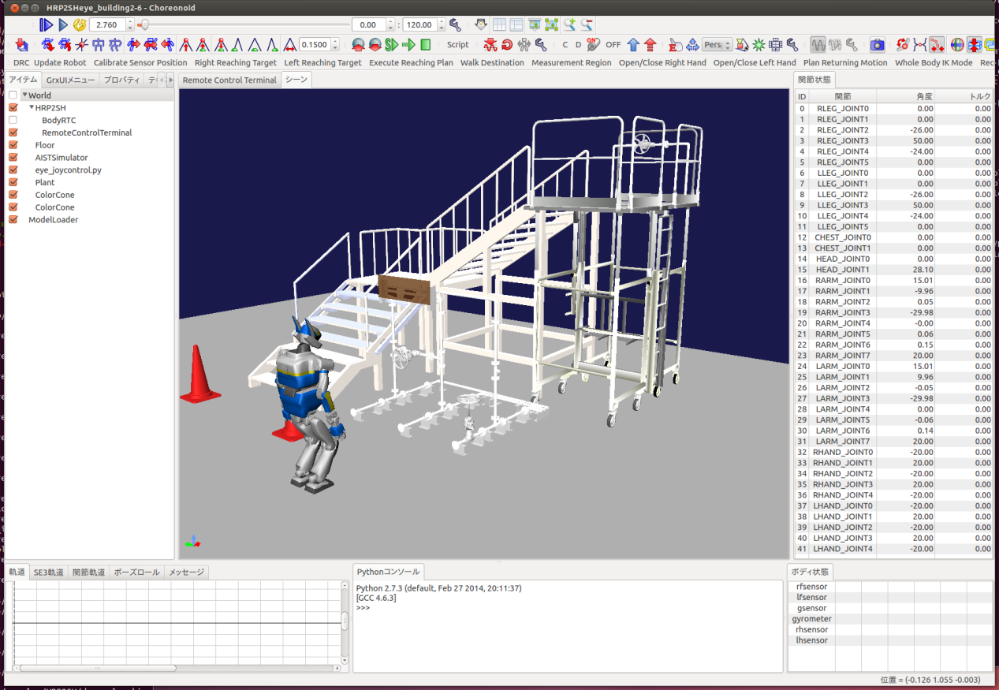
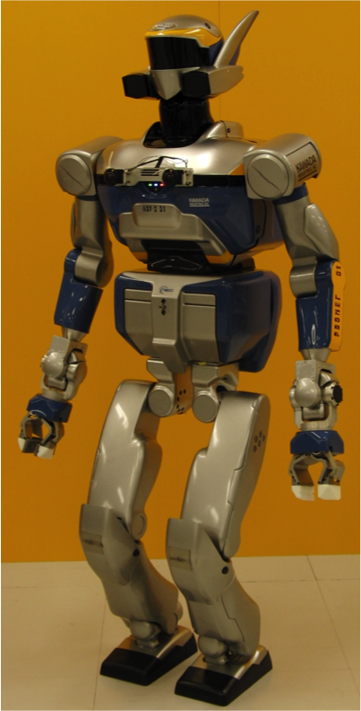
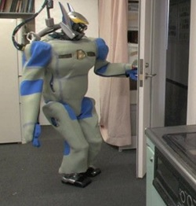

What is JVRC?
“Japan Virtual Robotics Challenge” (JVRC for short) is a competition of disaster response robots by computer simulations. It will be held as a part of “R&D project on Disaster-response Robots” by New Energy and Industrial Technology Development Organization (NEDO).
In this project the participants develop control software for robots to execute the tasks which are required at disaster sites, and compete for the performance on the robot simulator “Choreonoid”. The participants can use robots developed in the project, their own existing robots or newly designed robots in the simulator.
Top performers win the right to implement their software on the real robots and demonstrate at iREX 2015 (International Robot Exhibition 2015).
Brief schedule
March 2015：
- The following items will be available.
- Simulation models of robots developed in the project
- Tasks and their simulation models
- Competition rules
- Registration site will open.
- Workshop
- Competition
Participants
Individual, group or legal entity (The participant must be a legal entity to sign an NDA.)
Registration fee
Free
Robot simulator “Choreonoid”
 Choreonoid homepage, source code
Robots developed in the project(under development)
 *Signing an NDA (Non-disclosure agreement) is required to use some of robot models.
Sponsor
New Energy and Industrial Technology Development Organization(NEDO)
Contact
inquiry<at>jvrc.org
Note
Information in this page is subject to change. Please check the Website for the latest information.